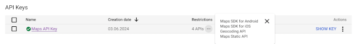

Wyatt is a location-based To-Do list application that uses the Google Maps API, e.g., Geocoding to convert geographic coordinates into human-readable addresses.
Using Google APIs is NOT free of charge! Please read Platform Pricing & API Costs - Google Maps Platform for details.
The application is provided as is and without warranty of any kind. The author is not responsible for any costs, damages or losses that may result from the use of the application or the Google APIs. By using the application, you agree to this disclaimer.
Wyatt does not collect any personal data. The application does not store any data on the server. The user's (API) key is stored securely on the client along with the user's To-Do list data (that's only the data entered by the user through the application's user interface). The application does not use cookies or any other tracking technologies.
Use API Keys with Geocoding API explains how to obtain a key where the following, minimum restrictions apply:
Version 0.0.1